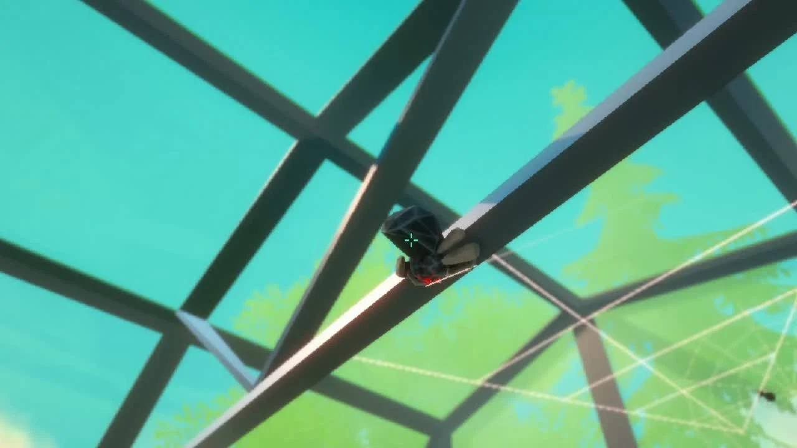

Explore & weave
Find anchor points and connect the space with new silk routes.
A small spider. A greenhouse to explore. A web that becomes an artwork.
IN DEVELOPMENTPROTOTYPE GAMEPLAY
SILENT PROTOTYPE FOOTAGEThe clip could not be played. Please use the video controls or open the source file.
Making connections between anchor points.
Silent prototype recordings from the team presentation.
01 / THE IDEA
Wonder Webby turns a spider’s movement into a record of play.
Players explore a greenhouse, connect objects with silk, catch insects and return to feed spiderlings. As the routes overlap, a web grows across the space. What begins as a way to move becomes an artwork.
The team project responds to a QAGOMA brief and takes inspiration from Sandra Selig’s “Webs from my garden”.
Find anchor points and connect the space with new silk routes.
Use the web network to reach and catch insects.
Follow existing routes back, feed the spiderlings, and expand the network.
02 / MY CONTRIBUTION
DETAILS TO ADDI participated in Wonder Webby as a team member. This section is reserved for my responsibilities, design decisions and development process.
To be added
To be added
To be added
03 / IN THE GREENHOUSE
Select an image to take a closer look.


THE WONDER WEBBY TEAM
Austin Suhor · Alex Roper · Leorita Mehmeti · Isaac Haworth · Yuen Wah Moc · Rong Guo
The screenshots and gameplay clips come from the Wonder Webby team presentation. They show a recorded prototype, not a browser-playable game.
Project background: teammate Alex Roper’s project page. Individual contributions described there belong to Alex, not to me.
Visit the external project pageBACK TO SELECTED GAMES